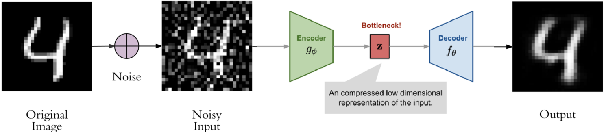

Autoencoding 101: Types, Beta-VAEs, and Beyond
Let's dive straight into the world of autoencoders and their cool variations, especially the game-changing beta-VAEs. We'll take a look at how these technologies are advancing data representation and generative tasks, and how they're really pushing the limits of what we can achieve in machine learning.
Autoencoders are a type of neural network that can be used to learn a compressed representation of input data. They work by training the network to reconstruct the input data from a lower-dimensional latent representation, which is typically obtained using an encoder. Autoencoders are versatile and can be used for a variety of tasks, including data compression, anomaly detection, and feature learning.
One of the main benefits of autoencoders is their ability to reduce the dimensionality of large and complex data sets, making them more manageable for downstream tasks such as classification, clustering, and visualization. They can also be used to identify patterns or anomalies in data that may not be easily detectable by other means.Using autoencoders, it is also possible to learn useful features from the data they are fed. These features can be used to enhance the performance of other machine learning models. It is also useful for data generation tasks such as generating images or synthesis of speech, which can be generated with them.
The spread of literacy was slow and gradual, with schools and educational institutions being established to teach the masses how to read and write. At first, literacy was only available to the privileged few, but as time went on, more and more people gained access to education. This brought about a significant change in society, as people became more informed and knowledgeable about the world around them. Consequently, more opportunities have emerged, especially with the advent of technology and the internet, making educational resources increasingly accessible to all. This shift has ushered in a new era of opportunities for those who previously lacked access to educational materials, paving the way for a more level playing field for the benefit of all. The democratization of knowledge has facilitated a more connected and equitable global population, breaking down traditional barriers to education and promoting greater social justice.
Notation
| Symbol | Brief Description |
|---|---|
| $\mathcal{D}$ | The dataset, $\mathcal{D}$, contains n data samples, where $\vert\mathcal{D}\vert =n $. Each sample is represented by a feature vector $\mathbf{x}^{(i)}$ for i = 1, 2, ..., n. |
| $\mathbf{x}^{(i)}$ | Each data point in the dataset is represented as a vector with $d$ dimensions. The vector for the i-th data point is represented as $\mathbf{x}^{(i)}$ and is written as $[x^{(i)}_1, x^{(i)}_2, \dots, x^{(i)}_d]$, where $x^{(i)}_j$ is the value of the j-th dimension for the i-th data point. |
| $\mathbf{x}$ | Each data point in the dataset is represented by a feature vector, $\mathbf{x}$. The dataset, $\mathcal{D}$, is a collection of these feature vectors, $\mathbf{x}$. |
| $\mathbf{x}'$ | The reconstructed version of a feature vector, $\mathbf{x}$, is a new version of the same vector that is generated through a process such as compression or denoising. This reconstructed version of $\mathbf{x}$ aims to closely approximate the original vector, but may have some differences due to the applied process. |
| $\tilde{\mathbf{x}}$ | This is the noisy version of the original data $\mathbf{x}$. |
| $\mathbf{z}$ | The latent vector. |
| $a_j^{(l)}$ | The activation function, represented mathematically as $a(x)$, is applied to the output of neuron $j$ in hidden layer $l$, where $j$ and $l$ are indices in the neural network. This function is used to introduce non-linearity into the network, allowing it to model more complex relationships between inputs and outputs. Common activation functions include sigmoid ($\sigma(x)$), rectified linear unit (ReLU, $max(0,x)$), and hyperbolic tangent (tanh, $\frac{e^x-e^{-x}}{e^x+e^{-x}}$). |
| $g_{\phi}(.)$ | The encoding function parameterized by $\phi$. This function is used to encode the input data into a compact representation that can be used for further processing in the neural network. The specific form of the encoding function may vary depending on the application, but common examples include convolutional neural networks (CNNs) and autoencoders. |
| $f_{\theta}(.)$ | The decoding function parameterized by $\theta$. This function is used to decode the encoded data back to its original form after it has been processed in the neural network. The specific form of the decoding function may vary depending on the application, but common examples include transposed convolutional neural networks (CNNs) and autoencoders. |
| $q_{\phi}(\mathbf{z}\vert\mathbf{x})$ | Estimated posterior probability function, also known as probabilistic encoder, parameterized by $\phi$. This function is used to estimate the probability distribution of latent variables $\mathbf{z}$ given the input data $\mathbf{x}$. This can be useful in certain types of generative models, such as Variational Autoencoders (VAEs), where the goal is to learn a compact and informative representation of the data. |
| $p_{\theta}(\mathbf{x}\vert\mathbf{z})$ | Likelihood function, also known as probabilistic decoder, parameterized by $\theta$. This function is used to estimate the probability of generating the true data sample $\mathbf{x}$ given the latent code $\mathbf{z}$. This can be useful in certain types of generative models, such as Variational Autoencoder (VAEs), where the goal is to learn a compact and informative representation of the data. |
Autoencoder
An Autoencoder is a type of neural network designed to learn an identity function in an unsupervised way. The main goal of an autoencoder is to reconstruct the original input, while at the same time compressing the data in the process, which allows discovering a more efficient and compressed representation of the input.
An Autoencoder typically consists of two main parts:
- Encoder network : The encoder network is responsible for translating the original high-dimensional input into a low-dimensional code, also known as latent representation. The encoder network typically has a smaller output layer than its input layer, which effectively reduces the dimensionality of the input data. It is trained to extract the most important features of the input data and represent them in the lower-dimensional code. The final output of the encoder network is the low-dimensional code, also known as the latent representation of the input data.
- Decoder network : The decoder network takes the low-dimensional code produced by the encoder network as input and attempts to reconstruct the original high-dimensional input data. The decoder network typically has a larger output layer than its input layer, which effectively increases the dimensionality of the code to match the original input data. It is trained to map the low-dimensional code back to the high-dimensional space of the original input. The decoder network is typically trained to minimize the difference between the input data and the reconstruction produced by the decoder network.

The diagram shows the general architecture of an autoencoder, with an encoder network on the left side that compresses the input data into a lower-dimensional code, and a decoder network on the right side that reconstructs the original input data from the code. The encoder and decoder networks are typically composed of multiple layers of neurons, with the number of neurons decreasing in the encoder network and increasing in the decoder network.
The encoder network in an autoencoder performs a similar function as dimensionality reduction techniques such as Principal Component Analysis (PCA) or Matrix Factorization (MF). However, the autoencoder is unique in that it is explicitly optimized for reconstructing the input data from the compressed code. A good intermediate representation not only captures latent variables in the data, but also benefits the overall process of decompressing the data.
The autoencoder model contains two main components, an encoder function $g(.)$ parameterized by $\phi$ and a decoder function $f(.)$ parameterized by $\theta$. The encoder function $g(.)$ takes the input data $\mathbf{x}$ and produces a low-dimensional code $\mathbf{z} = g_\phi(\mathbf{x})$ at the bottleneck layer. The decoder function $f(.)$ then takes this code and produces a reconstructed version of the input data $\mathbf{x}' = f_\theta(g_\phi(\mathbf{x}))$. The parameters $(\theta, \phi)$ of the encoder and decoder are learned together during the training process, with the goal of minimizing the difference between the original input and the reconstructed output, $\mathbf{x} \approx f_\theta(g_\phi(\mathbf{x}))$. The difference between the two vectors can be quantified using various metrics, such as cross-entropy when the activation function is sigmoid, or as simple as mean squared error (MSE) loss.
Where $L_\text{AE}$ is the loss function for the Autoencoder, $n$ is the number of input samples, $\mathbf{x}^{(i)}$ is the $i^{th}$ input sample, $f_\theta(.)$ is the decoder function parameterized by $\theta$, and $g_\phi(.)$ is the encoder function parameterized by $\phi$. This loss function measures the average squared difference between the original input and the reconstructed output, and the goal is to minimize this value during the training process by optimizing the parameters $\theta$ and $\phi$.
Denoising Autoencoder
Denoising Autoencoder is a modification to the basic autoencoder architecture that addresses the problem of overfitting. The main idea behind denoising autoencoder is to add noise to the input data, and then train the model to reconstruct the original, non-noisy input. This is done by corrupting the input data in a stochastic manner, creating a noisy version of the input, $\tilde{\mathbf{x}} \sim \mathcal{q}_\mathcal{D}(\tilde{\mathbf{x}} \vert \mathbf{x})$. The denoising autoencoder is then trained to recover the original input from the corrupted version, by minimizing the reconstruction error between the original input and the output produced by the network. This forces the model to learn a more robust representation of the data, as it must be able to reconstruct the original input despite the added noise.
The denoising autoencoder can be seen as a form of data augmentation, where the model is exposed to different variations of the input data during training. This improves the robustness and generalization of the model, as it is able to handle real-world, noisy data when it is used for inference. Additionally, by training on noisy data, the denoising autoencoder can also be used as a pre-training step for other machine learning tasks, such as classification or segmentation.
Where $\mathcal{M}_\mathcal{D}$ defines the mapping from the true data samples to the noisy or corrupted ones. The equation represents the mapping function that transforms the true data samples into their corresponding noisy or corrupted versions. This means that any given true data sample, when passed through this function, will result in a modified version that includes added noise or corruption. This can occur due to various factors such as measurement errors, sensor noise, or external interference. The mapping function $\mathcal{M}_\mathcal{D}$ allows us to understand and model these sources of noise or corruption in our data, allowing us to better analyze and interpret the results.
In the above equation, we can see the mathematical representation of the denoising autoencoder (DAE) algorithm. The first line defines the process of creating the corrupted input, $\tilde{\mathbf{x}}^{(i)}$, by sampling from a noise distribution, $\mathcal{M}_\mathcal{D}(\tilde{\mathbf{x}}^{(i)} \vert \mathbf{x}^{(i)})$. The second line represents the loss function, $L_\text{DAE}(\theta, \phi)$, which measures the difference between the original input, $\mathbf{x}^{(i)}$, and the output of the network, $f_\theta(g_\phi(\tilde{\mathbf{x}}^{(i)}))$. The network consists of two parts: the encoder, $g_\phi$, and the decoder, $f_\theta$. The encoder maps the corrupted input to a hidden representation, and the decoder maps the hidden representation back to the original input. The goal of the DAE is to minimize this loss function, and thus learn a robust and informative representation of the data.
The DAE is trained by minimizing the reconstruction error of the corrupted input by the original one. The algorithm uses a stochastic approach to add noise to the input data, this way the model is exposed to different variations of the input data during training, which improves the robustness and generalization of the model. As a result, the denoising autoencoder can handle real-world, noisy data when it is used for inference. Additionally, by training on noisy data, the denoising autoencoder can also be used as a pre-training step for other machine learning tasks, such as classification or segmentation.
In summary, denoising autoencoder is a powerful technique for learning robust and informative representations of data, and it has been widely used in a variety of applications, such as image and speech denoising, anomaly detection, and generative models. The technique was first proposed by Vincent et al. in 2008 and still remains an active research area in the field of deep learning.
Fig. 2. Denoising autoencoder model architecture.
The input, which may be a noisy or corrupted version of the original data, is fed into the encoder network. The encoder compresses the input into a lower-dimensional representation, also known as the bottleneck or latent representation. The decoder network then takes the bottleneck representation and reconstructs the original input, but with the noise removed. The model is trained using backpropagation to minimize the difference between the original input and the reconstructed output, thus removing noise and unwanted variations from the input. The final output is a denoised version of the original input.
When it comes to dealing with high dimensional input, such as images, it is important to take into account the fact that there may be a high degree of redundancy present. This means that the model will likely rely on evidence gathered from a combination of many input dimensions in order to accurately recover the denoised version, rather than overfitting to just one dimension. This approach is crucial for creating a strong and robust latent representation.
One way to control the amount of noise present in the input is through the use of a stochastic mapping, represented by the equation $\mathcal{q}_\mathcal{D}(\tilde{\mathbf{x}} \vert \mathbf{x})$. This method is not specific to any one type of corruption process, such as masking noise, Gaussian noise, or salt-and-pepper noise. Instead, it can be adapted to incorporate prior knowledge about the corruption process in order to achieve better results. By incorporating prior knowledge in this way, the model is able to better handle the noise and improve the overall accuracy of the denoised output.
In addition to this, by using a combination of many input dimensions, the model is able to create a more generalizable and robust latent representation. This is because the model is not relying on just one dimension for its understanding of the image, but rather is able to gather information from multiple dimensions. This improves the overall robustness of the model and allows it to better handle different types of noise and corruption.
Overall, the use of a stochastic mapping in combination with incorporating prior knowledge about the corruption process and utilizing a combination of many input dimensions, allows for the creation of a strong and robust latent representation for high dimensional input with high redundancy, such as images.
Unveiling the Hidden Structure: A Variational Autoencoder(VAE) Approach
A Variational Autoencoder (VAE) is a type of neural network architecture that combines the features of an autoencoder with the principles of variational bayesian and graphical modeling. The VAE model learns to encode an input data into a lower-dimensional latent space and then decode it back into the original space, while also approximating the underlying probability distribution of the data. This allows the VAE to generate new, unseen data samples that are similar to the training data.
A traditional autoencoder is a neural network that is trained to reconstruct its input by encoding it into a lower-dimensional representation and then decoding it back to its original form. The goal is to learn a compact representation of the input data that captures the most important features. However, the traditional autoencoder model assumes that the data is generated by a deterministic process, meaning that a specific input will always result in the same output. But, this is not always the case in real-world scenarios, where data can be generated by a probabilistic process, where a specific input can result in multiple possible outputs. This is where the VAE comes in.
Instead of mapping the input into a fixed vector, we want to map it into a probability distribution, rather than a fixed vector. The probability distribution is parameterized by $\theta$, and is defined by three components: the prior $p_\theta(\mathbf{z})$, the likelihood $p_\theta(\mathbf{x}\vert\mathbf{z})$, and the posterior $p_\theta(\mathbf{z}\vert\mathbf{x})$.
The prior distribution, $p_\theta(\mathbf{z})$, represents our initial belief about the distribution of the latent encoding vector $\mathbf{z}$ before any data is observed. It is a crucial component in Bayesian inference as it encodes our prior knowledge or assumptions about the data. The choice of prior can heavily influence the resulting posterior distribution, and it is important to choose a prior that accurately reflects our knowledge of the problem at hand. A commonly used prior is the standard normal distribution, which is a simple and commonly used distribution. However, in some cases, a different prior distribution may be more suitable for the problem at hand, such as a uniform distribution or a mixture of Gaussians. The choice of prior can also be informed by domain knowledge or previous studies on similar problems.
The likelihood distribution, $p_\theta(\mathbf{x}\vert\mathbf{z})$, represents the probability of observing a specific data point $\mathbf{x}$ given a particular value of the latent encoding vector $\mathbf{z}$. It is chosen to be a likelihood function that corresponds to the type of data being modeled. For example, for binary data, a Bernoulli likelihood function may be used. The likelihood function is a crucial component in Bayesian inference as it encodes the relationship between the data and the latent variables. The choice of likelihood function should be informed by the type of data being modeled and the research question being addressed. For example, if the data is continuous, a Gaussian likelihood function may be more appropriate.
The posterior distribution, $p_\theta(\mathbf{z}\vert\mathbf{x})$, represents the probability of the latent encoding vector $\mathbf{z}$ given a particular data point $\mathbf{x}$. It is calculated using Bayes' theorem, which states that the posterior distribution is proportional to the product of the likelihood and the prior. However, the calculation of the posterior distribution is often analytically intractable, and so an approximate posterior is often used such as Variational Inference or Markov Chain Monte Carlo (MCMC). These approximate methods aim to find a close approximation to the true posterior distribution, and the choice of method will depend on the problem at hand and the available computational resources. For example, Variational Inference is often used for large-scale problems where the computation of the true posterior is infeasible, whereas MCMC methods can be used for more complex models.
Based on the assumption that we know the true value of the parameter $\theta^{*}$ for this distribution, the process of generating a sample that looks like a real data point $\mathbf{x}^{(i)}$ can be broken down into the following steps:
-
A sample is taken from the prior distribution $p_{\theta^*}(\mathbf{z})$ to obtain a value for the latent encoding vector $\mathbf{z}^{(i)}$. This distribution encodes our initial beliefs about the distribution of the latent variables before any data is observed. The choice of prior can heavily influence the resulting generated samples, and it is therefore necessary to choose a prior that accurately reflects our knowledge of the problem at hand. A well-known and frequently used prior is the standard normal distribution, which is a simple and commonly used distribution. However, in some cases, a different prior distribution may be more suitable for the problem at hand, such as a uniform distribution or a mixture of Gaussians.
-
Next, a value for the data point $\mathbf{x}^{(i)}$ is generated from the conditional distribution $p_{\theta^*}(\mathbf{x} \vert \mathbf{z} = \mathbf{z}^{(i)})$. This distribution encodes the relationship between the latent variables and the data. The value of $\mathbf{z}^{(i)}$ is used as the condition for this generation, which means that it is used as the value for the latent variable in the conditional distribution. The choice of likelihood function should be informed by the type of data being modeled and the research question being addressed. For example, if the data is continuous, a Gaussian likelihood function may be more appropriate.
The above steps are typically used in generative models, where the goal is to generate new samples that look like real data. By following these steps, we can generate new samples that are similar to the real data, but they will not be exactly the same as the real data. This is because the real data is influenced by factors other than the latent variables and the true parameter values, such as noise or measurement error.
The optimal parameter, denoted as $\theta^{*}$, for a generative model is the one that maximizes the probability of generating real data samples. This is commonly represented mathematically as:
Where $\mathbf{x}^{(i)}$ represents a data sample. This equation can be understood as the log probability of all the data samples generated by the model, given a set of parameters $\theta$. The objective is to find the set of parameters that maximizes this probability, and this is the optimum parameters set of the model.
To better demonstrate the data generation process, the equation can be updated to include the encoding vector $\mathbf{z}$. This results in:
This equation represents the probability of generating a data sample $\mathbf{x}^{(i)}$, given the encoding vector $\mathbf{z}$ and the prior distribution $p_\theta(\mathbf{z})$. The encoding vector $\mathbf{z}$ is usually a lower dimensional representation of the data sample $\mathbf{x}^{(i)}$, and the prior distribution $p_\theta(\mathbf{z})$ is a probability distribution that represents the distribution of all possible encoding vectors. The generative process can be understood as first sampling an encoding vector $\mathbf{z}$ from the prior distribution, and then generating a data sample $\mathbf{x}^{(i)}$ given that encoding vector $\mathbf{z}$. The objective is to find the set of parameters $\theta$ that maximizes the likelihood of the data samples, which is equivalent to maximizes the integral of the product of $p_\theta(\mathbf{x}^{(i)}\vert\mathbf{z})$ and $p_\theta(\mathbf{z})$.
Unfortunately it is not easy to compute $p_\theta(\mathbf{x}^{(i)})$ in this way, as it is very expensive to check all the possible values of $\mathbf{z}$ and sum them up. To narrow down the value space to facilitate faster search, we would like to introduce a new approximation function to output what is a likely code given an input $\mathbf{x}$, $q_\phi(\mathbf{z}\vert\mathbf{x})$, parameterized by $\phi$.
The approximation function $q_\phi(\mathbf{z}\vert\mathbf{x})$ is typically chosen to be a simple distribution, such as a standard normal distribution. The VAE then uses this approximation function to estimate the true posterior distribution $p_\theta(\mathbf{z}\vert\mathbf{x})$. This is done by minimizing the Kullback-Leibler divergence between the true posterior and the approximation function, which is also known as the variational lower bound.
Here is a representation of the variational lower bound, which we will examine in more detail in its own section:
The first term in the variational lower bound is the expected log-likelihood of the data, under the approximation function. The second term is the KL divergence between the approximation function and the prior distribution. The VAE is trained by maximizing the variational lower bound with respect to the parameters $\theta$ and $\phi$. This is done by using gradient-based optimization methods, such as stochastic gradient descent (SGD).
The VAE has several advantages over traditional autoencoder models. First, it allows us to generate new samples from the data distribution, by sampling from the prior distribution and then decoding the samples. This can be useful in various applications, such as image synthesis, anomaly detection, and data generation. Second, it allows us to estimate the true posterior distribution, which can be useful in various applications, such as semi-supervised learning and Bayesian neural networks. Third, it allows us to incorporate prior knowledge about the data distribution, by choosing the prior distribution and the approximation function.
In general, the VAE is a powerful generative model that allows us to model the data distribution in a probabilistic way, by introducing a latent variable that represents the hidden structure of the data. It is trained by maximizing the variational lower bound, which is a trade-off between the expected log-likelihood of the data and the KL divergence between the approximation function and the prior distribution. The VAE has several advantages over traditional autoencoder models, such as the ability to generate new samples, estimate the true posterior distribution, and incorporate prior knowledge about the data distribution. To further understand the training process of the VAE, it's imperative to delve into two key concepts: the Loss function and the Reparameterization trick. The Loss function is used to measure the difference between the predicted and actual data, and the Reparameterization trick is a technique used to ensure the VAE's latent variables are differentiable, making it possible for the model to be trained using gradient-based optimization methods. In the next sections, we will explore these concepts in more detail, and see how they contribute to the overall performance of the VAE model.
Loss Function: ELBO
In variational inference, we want to approximate the true posterior distribution, $p_\theta(\mathbf{z}\vert\mathbf{x})$, with a simpler distribution, $q_\phi(\mathbf{z}\vert\mathbf{x})$. The goal is to find a $q_\phi(\mathbf{z}\vert\mathbf{x})$ that is as close as possible to $p_\theta(\mathbf{z}\vert\mathbf{x})$. One way to quantify the distance between these two distributions is by using the Kullback-Leibler divergence (KL divergence). KL divergence, denoted as $D_\text{KL}(X|Y)$, measures the amount of information lost when approximating a distribution X with distribution Y. In the context of variational inference, we want to minimize the KL divergence between $q_\phi(\mathbf{z}\vert\mathbf{x})$ and $p_\theta(\mathbf{z}\vert\mathbf{x})$, with respect to $\phi$. It is important to note that we use the reversed KL divergence, $D_\text{KL}(q_\phi | p_\theta)$ instead of the forward KL divergence, $D_\text{KL}(p_\theta | q_\phi)$. The reason for this is that the forward KL divergence requires the approximating distribution, $q_\phi$, to cover the entire support of the true distribution, $p_\theta$, which can be restrictive. On the other hand, minimizing the reversed KL divergence squeezes the approximating distribution, $q_\phi$, under the true distribution, $p_\theta$, allowing for more flexibility. Let's now expand the equation for the reversed KL divergence between $q_\phi(\mathbf{z}\vert\mathbf{x})$ and $p_\theta(\mathbf{z}\vert\mathbf{x})$:
A rearranged version of the equation:
A probability of generating real data and the difference between the estimated posterior and the real distribution are represented in the equation on the left, while on the right, the log-likelihood is represented, along with the difference between the prior and approximating latent variables.
The objective of VAE is to maximize this equation. The loss function for VAE is defined as the negation of this equation:
The Evidence Lower Bound (ELBO) is an upper bound on the log marginal likelihood of the data, $\log p_\theta(\mathbf{x})$. We can optimize the ELBO with respect to $\phi$ and $\theta$ to find the best approximating distribution, $q_\phi(\mathbf{z}\vert\mathbf{x})$, and the best parameter values, $\theta$.
In summary, the ELBO is a scalar value that is used as a loss function in variational inference to approximate the true posterior distribution. It is the sum of two terms: the expected log likelihood of the data under the approximating distribution, and the KL divergence between the approximating distribution and the true posterior. It can be optimized with respect to both the parameters of the approximating distribution and the model, in order to find the best approximation of the true posterior distribution.
It is important to note that the ELBO is an lower bound on the true log likelihood of the data, thus, the optimization of ELBO will not give the true maximum likelihood estimate of the parameters. However, it is a practical and commonly used method for approximating the true posterior in Bayesian inference.
Also, in practice, the ELBO is usually optimized via Stochastic Gradient Variational Bayes (SGVB) which is an efficient optimization method that utilizes the reparameterization trick and stochastic gradient descent to optimize the ELBO.
In a nutshell, Variational Inference is a powerful technique for approximating complex posterior distributions in Bayesian models, and the Evidence Lower Bound (ELBO) is a key component of this method, serving as the loss function to be optimized during the inference process.
Reparameterization Trick
The reparameterization trick is a technique used to make stochastic processes differentiable in order to use them in neural networks. It is particularly useful in the context of generative models, where a random variable is typically used to generate data samples. However, as sampling is a stochastic process, it is not differentiable, which makes it difficult to use in a neural network.
To solve this problem, the reparameterization trick expresses the random variable as a deterministic function of another random variable and some parameters that can be learned by the network. This way, the network can learn the parameters of the distribution while keeping the stochasticity in the auxiliary random variable, making it possible to compute gradients and update the parameters.
For example, in the case of a multivariate Gaussian distribution, the random variable can be represented as:
where $\boldsymbol{\mu}^{(i)}$ is the mean of the distribution, $\boldsymbol{\sigma}^{2(i)}$ is the variance of the distribution and $\mathbf{x}^{(i)}$ is the input data. The auxiliary random variable $\boldsymbol{\epsilon}$ is often a standard normal distribution. By expressing the random variable in this way, the network can learn the mean and variance of the distribution explicitly using the reparameterization trick, while the stochasticity remains in the random variable $\boldsymbol{\epsilon}$. Notice that the $\odot$ symbol refers to element-wise product.
This trick allows the network to compute gradients and update the parameters of the distribution, and it is not limited to the Gaussian distribution, it can be applied to other types of distributions as well, such as the Bernoulli, Categorical, etc.
The reparameterization trick is particularly useful in the context of Variational Autoencoders (VAEs) and their variants, such as Variational Inference Generative Adversarial Networks (VIGANs). VAEs are a type of generative model that use a latent variable to generate data samples. They also include an encoder network that maps data samples to a latent representation, and a decoder network that maps latent representations to data samples. By using the reparameterization trick, VAEs can be trained end-to-end using backpropagation, allowing the network to learn the distributions of the latent variables that generate the data..
In general terms, the reparameterization trick is a technique used to make stochastic processes trainable for use in neural networks, particularly in generative models. It expresses the random variable as a deterministic function of another random variable and some parameters that can be learned by the network, allowing the network to learn the parameters of the distribution while keeping the stochasticity in the auxiliary random variable. This technique is widely used in VAEs and other variants, making it possible to train them end-to-end via backpropagation.

In the case of a multivariate Gaussian assumption, the encoder network maps the input data to the mean and variance of a Gaussian distribution, and the decoder network samples from this distribution to generate new data. The goal of the VAE is to learn an encoder and decoder that can generate realistic new data and also reconstruct the input data well. The VAE is trained by minimizing the difference between the input data and the reconstructed data, and also by encouraging the latent code to be distributed as a Gaussian distribution.
Beta-VAE
The equation for the Evidence Lower Bound (ELBO) in Beta-VAE is as follows:
Beta-VAE is a variant of the Variational Autoencoder (VAE) model, which is a generative model that is trained to learn a compact latent representation of data. The main idea behind VAEs is to learn a probabilistic encoding of the data, such that the data can be generated from a simple random noise signal. Beta-VAE modifies the standard VAE objective function by introducing a new hyperparameter, beta, which controls the trade-off between reconstruction error and the KL divergence between the approximate posterior and true posterior.
The first term in the ELBO equation is the KL divergence between the approximate posterior distribution, $q_\phi(\mathbf{z}\vert\mathbf{x})$, and the true posterior distribution, $p_\theta(\mathbf{z}\vert\mathbf{x})$, scaled by the beta hyperparameter. The KL divergence term measures how different the approximate posterior is from the true posterior. In Beta-VAE, by increasing the value of beta, the weight on the KL divergence term is increased, which in turn encourages the approximate posterior to match the true posterior more closely. This results in a more disentangled representation of the data.
The second term in the ELBO equation is the negative log-likelihood of the data given the latent variables, $-\log p_\theta(\mathbf{x}\vert\mathbf{z})$. This term measures the difference between the original data and the data generated by the decoder network.
The encoder and decoder networks, represented by the parameters $\phi$ and $\theta$, are trained to maximize the ELBO with respect to these parameters. The encoder network maps the data to the latent space and the decoder network maps the latent variables back to the original data space. The training process involves minimizing the difference between the original data and the data generated by the decoder network. The objective of the training process is to learn a probabilistic encoding of the data such that the data can be used as en embedding vector in various applications (i.e. search), help data compression, or reveal the underlying data generative factors.
The value of beta can be adjusted to prioritize either reconstruction or disentanglement, depending on the task and dataset. For example, in applications where reconstruction accuracy is more important, a smaller value of beta can be used, while in applications where disentanglement is more important, a larger value of beta can be used. Additionally, the value of beta can be adapted during training to achieve a balance between reconstruction and disentanglement.
In summary, Beta-VAE is a generative model that is trained to learn a compact latent representation of data. It modifies the standard VAE objective function by introducing a new hyperparameter,beta, which controls the trade-off between reconstruction error and the KL divergence between the approximate posterior and true posterior. By increasing the value of beta, the weight on the KL divergence term is increased, which results in a more disentangled representation of the data. The encoder and decoder networks are trained to maximize the ELBO, and the value of beta can be adjusted to prioritize either reconstruction or disentanglement, depending on the task and dataset. This allows for more flexibility and control over the representation learned by the model, and can lead to better performance on certain tasks and datasets. Overall, Beta-VAE is a powerful tool for learning generative models and can be applied to a wide range of problems in computer vision, natural language processing, and other fields.
.python-roadmap:hover { transform: translateY(-3px); box-shadow: 0 15px 40px rgba(0, 0, 0, 0.12); } .python-roadmap thead { background: linear-gradient(135deg, rgba(0, 123, 255, 0.1), rgba(0, 86, 179, 0.1)); } .python-roadmap th { padding: 1.25rem 1.5rem; text-align: left; font-weight: 600; color: var(--primary-color); font-size: 1.1em; letter-spacing: 0.5px; border-bottom: 2px solid rgba(0, 0, 0, 0.05); position: relative; transition: all 0.3s ease; } .python-roadmap th::after { content: ''; position: absolute; bottom: 0; left: 50%; transform: translateX(-50%); width: 0; height: 2px; background: var(--primary-color); transition: width 0.3s ease; } .python-roadmap th:hover::after { width: 80%; } .python-roadmap td { padding: 1.25rem 1.5rem; border-bottom: 1px solid rgba(0, 0, 0, 0.05); color: var(--text-primary); transition: all 0.3s cubic-bezier(0.4, 0, 0.2, 1); position: relative; overflow: hidden; } .python-roadmap tr:last-child td { border-bottom: none; } .python-roadmap tr { background: var(--bg-primary); transition: all 0.3s ease; } .python-roadmap tr:hover { background: var(--bg-secondary); } .python-roadmap tr:hover td { transform: translateX(8px); } .python-roadmap a { color: var(--primary-color); text-decoration: none; transition: all 0.3s ease; position: relative; padding: 0 0 2px 0; display: inline-block; } .python-roadmap a::after { content: ''; position: absolute; width: 0; height: 1.5px; bottom: 0; left: 0; background-color: var(--primary-color); transition: width 0.3s ease, opacity 0.3s ease; opacity: 0.7; } .python-roadmap a:hover { color: var(--primary-hover); } .python-roadmap a:hover::after { width: 100%; opacity: 1; } /* Animation for table rows */ .python-roadmap tr { opacity: 0; animation: fadeIn 0.5s ease forwards; } @keyframes fadeIn { from { opacity: 0; transform: translateY(10px); } to { opacity: 1; transform: translateY(0); } } /* Staggered animation for rows */ .python-roadmap tr:nth-child(1) { animation-delay: 0.1s; } .python-roadmap tr:nth-child(2) { animation-delay: 0.2s; } .python-roadmap tr:nth-child(3) { animation-delay: 0.3s; } .python-roadmap tr:nth-child(4) { animation-delay: 0.4s; } .python-roadmap tr:nth-child(5) { animation-delay: 0.5s; } /* Dark mode specific styles */ body.dark .python-roadmap { box-shadow: 0 10px 30px rgba(0, 0, 0, 0.3); } body.dark .python-roadmap:hover { box-shadow: 0 15px 40px rgba(0, 0, 0, 0.4); } body.dark .python-roadmap th { background: linear-gradient(135deg, rgba(0, 123, 255, 0.15), rgba(0, 86, 179, 0.15)); } body.dark .python-roadmap td { border-bottom-color: rgba(255, 255, 255, 0.05); }
| Python Roadmap | Learning Resources |
|---|---|
| Beginner Python | Bootcamp - Python Full Course by freeCodeCamp.org, Python for Everybody by Dr. Chuck Severance, Codecademy's Learn Python 3, Harvard CS50 Introduction to Computer Science with Python [YouTube playlist], MIT Introduction to Computer Science and Programming in Python [YouTube playlist] |
| Intermediate Python | Intermediate Python by Muhammad Yasoob Ullah Khalid, Python Intermediate by Udacity, Google Automation Using Python by Coursera |
| Advanced Python | Fluent Python by Luciano Ramalho, Python Advanced Topics by Fred Baptiste |
| Web Development with Python | Django for Beginners by William S. Vincent, Full Stack Python by Matt Makai |
| Data Science with Python | Python Data Science Handbook by Jake VanderPlas, Data Science with Python by edX |
| Machine Learning with Python | Hands-On Machine Learning with Scikit-Learn, Keras, and TensorFlow by Aurélien Géron, Machine Learning with Python by Coursera |
| Python Tutorials | Corey Schafer's YouTube channel |
To excel in machine learning, it's crucial to have a solid grasp of certain mathematical concepts. Some of the key areas that are essential for success in this field include linear algebra, probability and statistics, calculus, and optimization. Linear algebra is a fundamental concept in AI, involving vectors, matrices, and other mathematical structures. It is essential to gain a solid understanding of linear algebra in order to be able to represent and transform data in a way that is useful for machine learning. Probability and statistics provide the framework for understanding uncertainty and making predictions based on data. Concepts like discrete and continuous probability, standard probability distributions, and hypothesis testing are essential for analyzing data and building effective models. Calculus is also important in AI and ML, particularly in the optimization of models. Concepts like gradient descent, momentum, and the Adam optimization algorithm rely heavily on calculus. Still, deep learning is an emerging technology, and when you train a neural network, understanding the math behind the algorithms can help you make better decisions. Additionally, exploratory data analysis is a skill often underrated but incredibly valuable in data-centric AI development. Through systematic exploration of the data, EDA enables the discovery of errors and insights that can drive progress. But it's not just about knowing the math itself. It's also about having the skills to use that math to solve problems, to debug code, and to make better decisions about how to proceed. However, as machine learning becomes more sophisticated, it's getting easier to use and requires less debugging. This means that you don't need to have an in-depth knowledge of the complex math behind it to make it work. Even so, the fundamentals can still prove to be extremely helpful if you encounter problems or need to make tweaks. Ultimately, it's up to you to decide how deep you want to dive into the math and how it fits into your overall goals for using machine learning techniques.😟 "Mathematics is the language in which God has written the universe." - Galileo Galilei
😟 "Deep learning is not a black box, it's a glass box - you can see what's happening inside if you know where to look." - Yann LeCun
Learning how to code AI has several benefits, including providing career opportunities, contributing to innovation, developing problem-solving skills, and gaining a competitive advantage. With the growing demand for AI professionals, learning how to code AI can position individuals for a lucrative and rewarding career. Furthermore, by learning the skill of programming AI, individuals might be able to develop innovative solutions that will revolutionize industries, and provide solutions to complex problems. Furthermore, developing problem-solving skills while coding AI can be transferable to other domains, making individuals more efficient, scalable, and robust in their approach to problem-solving. For instance, AI engineers can use their problem-solving skills to quickly identify bugs in the code and rapidly develop efficient solutions to any programming problems. Finally, gaining expertise in coding AI can offer a competitive advantage over other professionals in the field. This will enable individuals to develop innovative solutions that give their organizations a competitive edge.
😟 "The key to addressing job displacement is to focus on the opportunities created by technology, not just the challenges." - Tony Robbins
Related Topics & Further Reading
To deepen your understanding of AI programming, explore these related topics:
- Causality in Machine Learning - Understanding cause vs. correlation
- Debugging Deep Learning Models - Practical troubleshooting strategies
- Autoencoding 101 - Neural network architectures and VAEs
- Data Analysis Fundamentals - Essential skills for AI development
- Jobs in the Digital Era - Understanding automation's impact on employment
Conclusion
AI is transforming every aspect of our lives, and the ability to code AI has become the new literacy. People are writing codes to create incredible things, from self-driving cars to advanced medical technologies. By learning how to code AI, you can develop the skills needed to create intelligent systems that can solve complex problems and improve our lives. To learn coding AI, you need to have a strong foundation in programming fundamentals, a deep understanding of machine learning algorithms and AI applications, and a range of technical and non-technical skills. There are many benefits to learning how to code AI, including career opportunities, innovation, problem-solving skills, and a competitive advantage. As a person with the right training and dedication, it is possible to develop a proficient AI coder and contribute to the development of novel solutions that will have a lasting impact on the world we live in.
Citation
Cited as:
kibrom, Haftu. (Jan 2023). Coding AI: The New Literacy. Kb’s Blog. https://kibromhft.github.io/posts/2023-01-19-coding/.
Or
@article{kibrom2022coding,
title = "Coding AI: The New Literacy",
author = "kibrom, Haftu",
journal = "Kb's Blog",
year = "2023",
month = "Jan",
url = "https://kibromhft.github.io/posts/2023-01-19-coding/"
}